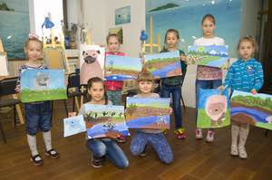
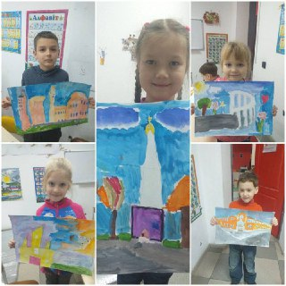
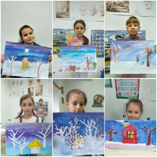
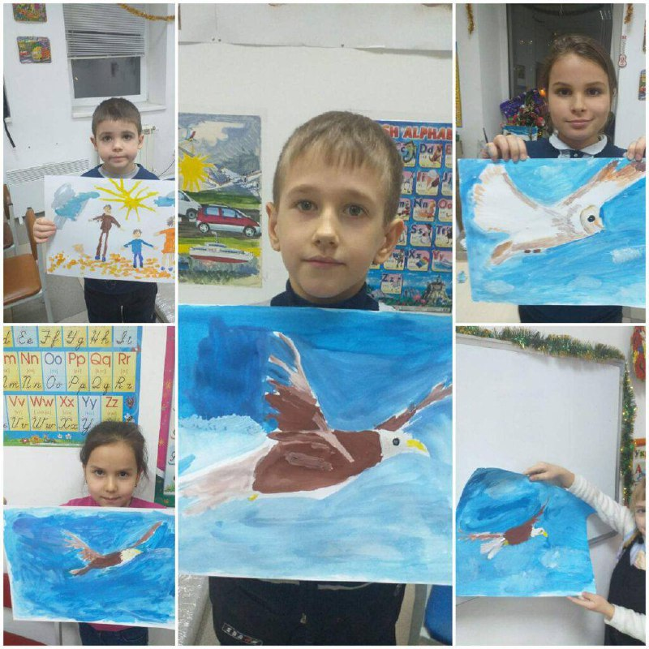

Творчий день у дитячому хабі "Радість" (Запорізька область, м. Високогірне)
Цей день ми присвятили творчості, щоб подарувати дітям трохи радості та нових вражень.За пензлями та фарбами наші юні гості вчилися бачити красу в деталях.Щиро радіємо, що змогли створити атмосферу тепла для цих чудових дітей!

Талановиті діти!.

Маленькі творці та їхні щедеври!.

Вільний політ фантазії!.

Наші юні митці!